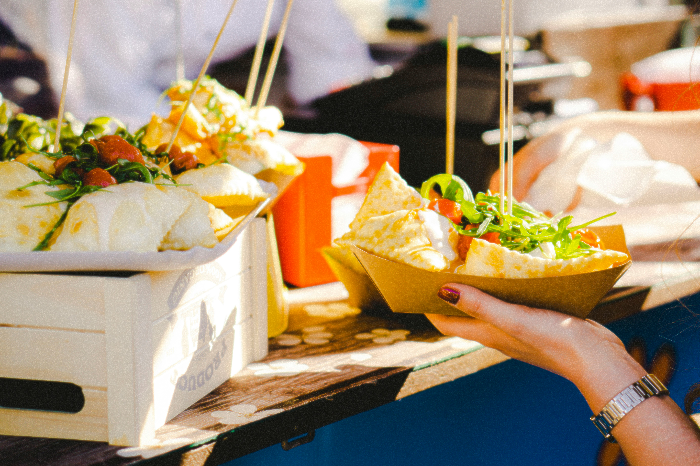

20 juli 2026 — Manado Convention Center
Manado Convention Center
Konferensi teknologi terbesar di Sulawesi Utara, menghadirkan pembicara dari
Google, Gojek, dan Tokopedia. Topik utama meliputi AI, Web Development, dan
Cybersecurity.
Tiket tersedia mulai Rp150.000 untuk pelajar dan Rp300.000 untuk umum.
Kapasitas terbatas 500 peserta.
5-7 Agustus 2026 — Lapangan Taruna Remaja Gorontalo

Gorontalo Food Festival
Festival kuliner terbesar di Gorontalo menghadirkan 50+ stand makanan khas
daerah — binde biluhuta, sate tuna, ilabulo, hingga kue cucur. Ada
juga lomba memasak antar kelurahan dan penampilan musik tradisional
Gorontalo setiap malam.
Gratis untuk pengunjung umum
Automotif Workshop: ECU Tuning Dasar
15 Agustus 2026 — SMK Negeri 1 Manado
Automotif Workshop 2025